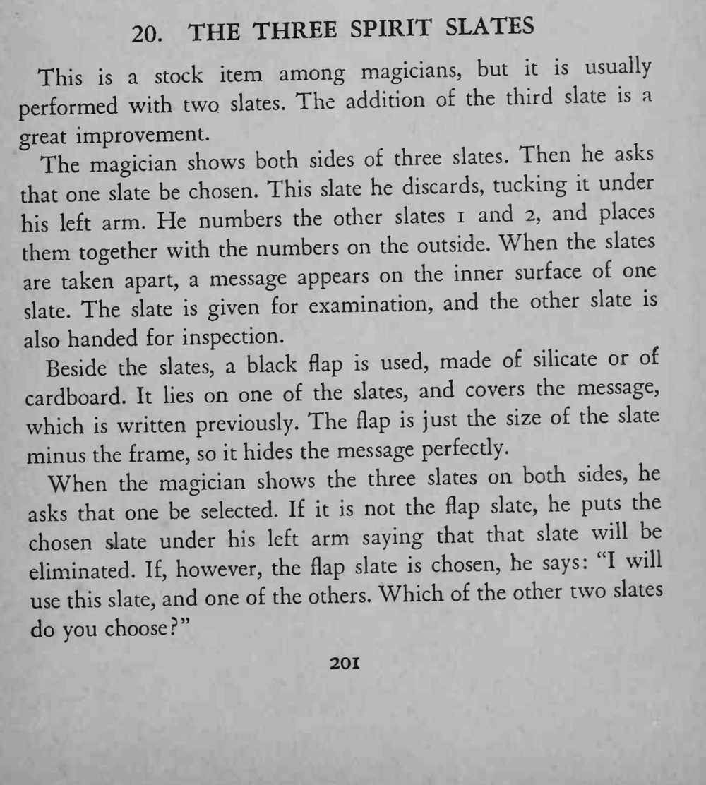
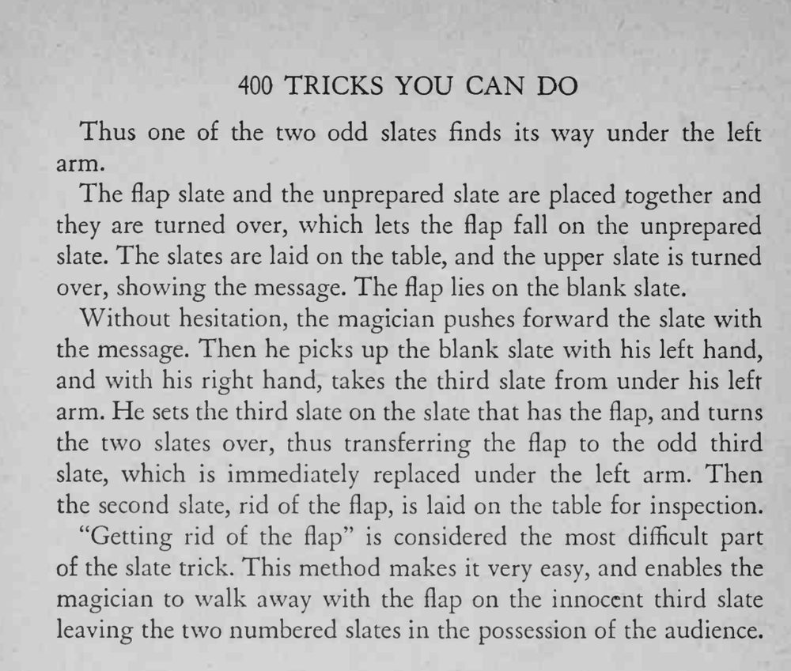

三块石板正反两面都展示过，其中一块被淘汰放在一旁；剩下的两块合上再分开，中间竟出现了一段信息。
flap 要正好盖住信息、翻动时不能脱出，全程动作要流畅别停顿。


This a stock item among magicians, but it is usually performed with two slates. The addition of the third slate is a great improvement. The magician shows both sides of three slates. Then he asks that one slate be chosen. This slate he discards, tucking it under arm. He numbers the other slates 1 and 2, and places his left them together with the numbers on the outside. When the slates taken apart, a message appears on the inner surface of one are The slate given for examination, and the other slate is slate. is also handed for inspection. Beside the slates, a black flap is used, made of silicate or of cardboard. It lies on one of the slates, and covers the message, which written previously. The flap is just the size of the slate minus the frame, so it hides the message perfectly. When the magician shows the three slates on both sides, he asks that one be selected. If it is not the flap slate, he puts the chosen slate under his left arm saying that that slate will be eliminated. If, however, the flap slate is chosen, he says: "I will use this slate, and one of the others. Which of the other two slates do you choose?" Thus one of the two odd slates finds its way under the left arm. The flap slate and the unprepared slate are placed together and they are turned over, which lets the flap fall on the unprepared slate. The slates are laid on the table, and the upper slate is turned over, showing the message. The flap lies on the blank slate. Without hesitation, the magician pushes forward the slate with the message. Then he picks up the blank slate with his left hand, and with his right hand, takes the third slate from under his left arm. He sets the third slate on the slate that has the flap, and turns the two slates over, thus transferring the flap to the odd third slate, which is immediately replaced under the left arm. Then the second slate, rid of the flap, is laid on the table for inspection. "Getting rid of the flap" is considered the most difficult part of the slate trick. This method makes it very easy, and enables the magician to walk away with the flap on the innocent third slate leaving the two numbered slates in the possession of the audience.